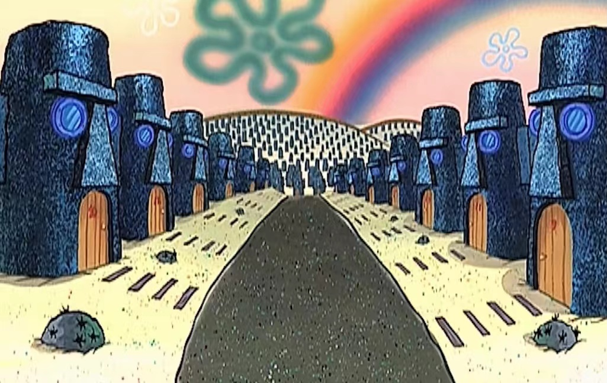
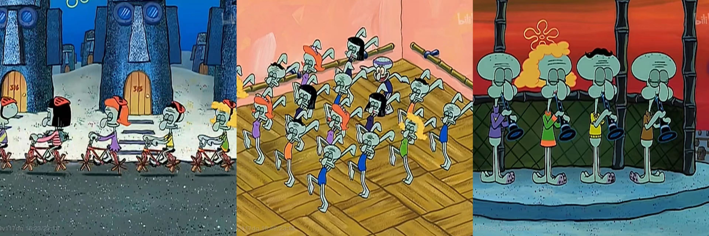

Modernity is a complex notion that is intertwined with historical evolution. It is characterized by the growth of industrialization, the rise of urbanization, and the development of new technologies (Baudrillard 1987:65). Modernity is an era of productivity, advocating the efficacy of human labor (Baudrillard 1987:66), leading to negative results like social dislocation, the erosion of community, and alienation. People gradually lose their identity, and degrade into a state of numbness.
Another symptom of modernity is consumerism. Productivity is strongly connected with capitalism and consumption (Firat et al. 2013:186). In a consumer society, people find meaning and satisfaction through purchasing goods (Firat et al. 2013:185). After the continuous chase for comfort and gratification, they may find themselves becoming unhinged. In SpongeBob SquarePants, Hillenburg created spaces that mock modernity and express his concern towards this social issue.
3.1 Tentacle Acres
Tentacle Acres, or Squidville, is a private independent community only for octopuses which first appeared in “Squidville (S02E26b)”. Squidward moves there after being fed up with his neighbors, SpongeBob and Patrick, as they keep interrupting his life with reef blowers. Tentacle Acres is an exclusive space with high-tech security system, whose role is to prevent non-octopus species from entering. The landscape there is neat but monotonous. Houses line up in rows, all of them being the same Easter Island Head that Squidward lives in. When Squidward passes the interview over the intercom and opens the front gate for the first time, thousands of identical buildings pop up in the frame, creating an overwhelming and claustrophobic atmosphere, almost like a graveyard. Squidville has functional places, such as a health store that sells canned bread, a scenic park, a bike path, an interpretive dance academy, and a bandstand where the clarinet trio performs.

Fig. 1. Tentacle Acres
Residents in Tentacle Acres and their daily actions serve as a part of the community’s landscape. They are all octopuses that look similar, with analogous hobbies and follow a same routine of life. Many of its citizens share an interest in biking, clarinets, and dancing. They ride the same bikes for transportation, eat the same canned bread, play the same song on the clarinet, and do the same dance in the dancing class every day. As a result, Squidville appears as a place with an extreme sense of order, leaving no room for uniqueness and individuality. Eventually, the landscape becomes dull and boring. It also creates a strong sense of fakeness, as if all the inhabitants are performing, rather than living an authentic life.

Fig. 2. Daily Routine in Tentacle Acres
Tentacle Acres can be seen as a parody of a New Urbanist city in the United States. New Urbanism is an urban design movement that seeks to create livable and walkable communities through the integration of mixed-use development, green landscapes, and pedestrian-friendly streets (Congress of New Urbanism 2015). The movement gained popularity in the 1980s and 1990s as a response to the negative effects of urban sprawl, a byproduct of modernity and urbanization, and the desire for more sustainable urban places (Song and Knaap 2003:218). Prevailing features of Squidville, like its close proximity between different functional places, strong sense of neighborhood, advocacy for cycling, and public green spaces, correspond with those of New Urbanism. New Urbanists value order and communal tradition (Beauregard 2002:183), which are vividly exemplified in the fictional town’s meticulously planned layout and emphasis on community.
New Urbanism, despite being the reaction aimed at solving modern crisis, is not without its own problems. New Urbanist neighborhoods and developments can be expensive and cater to affluent residents, which can lead to the displacement of low-income residents and gentrification of urban landscape (Smith 2002:439). Additionally, the trend jeopardizes multicultural diversity (Beauregard 2002:188). Members within its community are less welcoming to those who do not fit the demographic or socio-economic profile of the area, which would possibly cause tensions between new and old residents. Hillenburg expresses his concern towards this issue by the following scene: when Squidward enters Tentacle Acres, he bumps into a local resident, who does not treat him nicely and calls him “less alert than people in retirement home”.
To construct material and symbolic landscapes in New Urbanist cities is to create cultural images with a common style (Zukin 1996:ix). Some critics argue that New Urbanism promotes a Disneyfication of urban places, where everything is designed to be aesthetically pleasing and nostalgic, but lack authenticity and diversity (Zukin 1996:20). This could trigger a homogenization of culture and lifestyles, where residents feel pressure to conform to a certain ideal of community life, rather than expressing their own unique identities. Ultimately, they may lose their individuality. The mockery to this problem is manifested in the show. At the end of this episode, Squidward goes through disillusionment. Being driven crazy by the dull life there, he wholeheartedly agrees to leave Squidville. However, knowing Squidward as the one with an exactly tedious daily routine, SpongeBob and Patrick fail to recognize Squidward since the latter stands out from all other octopuses by his insanity.
3.2 Glove World!
SpongeBob and Patrick frequently visit Glove World!, a colorful and whimsical amusement park located in Bikini Bottom. The theme of the place revolves around gloves: it is designed to resemble a giant glove, with a large open hand forming the entrance and a series of individual finger-shaped rides branching off from the main area. Various glove-themed products are sold in the park, like glove-shaped balloons, glove lights, and glove hats (Glove World! 2021).

Fig. 3. Glove World!
The park's landscape is adorned with bright colors and playful imagery, featuring a giant inflatable slide, oversized plush gloves, and a castle with a glove-shaped roof. The park's walkways are lined with lighted glove-shaped street lamps, and the park's restaurants and shops are designed to look like giant gloves as well. The park's most iconic feature is the "Glove Balloon," a massive balloon shaped like a white glove that floats above the park's entrance. The rides are constructed to resemble a variety of objects associated with gloves, including a roller coaster that looks like a finger nail file, a Ferris wheel designed to resemble a glove's cuff, and a spinning ride that looks like a washing machine for gloves. Overall, the landscape of Glove World! is whimsical, imaginative, and designed to evoke a sense of excitement and happiness in the visitors.
This excitement, however, is a false sense masking its consumerist ideology behind. The colorful and vibrant environment is filled with bright lights, flashing signs, and carnival-style games, all of which are designed to appeal to visitors’ senses and create a funny, playful atmosphere. Furthermore, its layout is strategically designed to lead visitors past various attractions and merchandise stands at one time in order to promote selling.
Likewise, the attractions in Glove World! are created to encourage visitors to spend money. In “Roller Cowards (S05E86a)”, for instance, the park’s main roller coaster, Fiery Fist O’ Pain, is marketed as an intense and thrilling ride that promises to deliver an adrenaline rush. Visitors are likely to be drawn to this ride, which can generate a significant amount of revenue for its owner.
In the episode “Glove World R.I.P (S08E172b)”, Hillenburg mocks the cruelty of capitalism in this episode. The manager of the park ignores the safety and happiness of the visitors, as his focus has shifted to Glove Universe, which can maximize the profit. When the park is dismantled, it is clearly demonstrated that the visitors’ attachment to Glove World! is mainly due to their eagerness to get physical thrill and consume its merchandise. Being poisoned by the false excitement and happiness, sea creatures line up in front of the gate of the brand new theme park, waiting to spend more. Here, the irony reaches its peak.

Fig. 4. Glove Universe